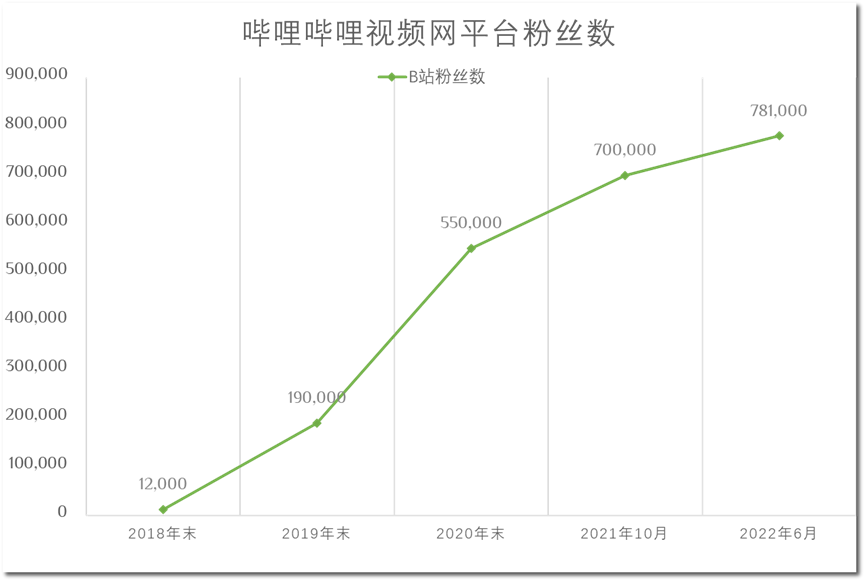

平台策略指引下艺术科普自媒体运营与内容创作的反思与选择
以“艺术与设计史”为例
科普教育媒体在承载诸如知识推广，协调和丰富教育形式等的职能上的意义不言自明。但纵观整个科普教育媒体门类，相对于从事娱乐、新闻等内容创作的媒体部门，其处于一个较少关注且发展程度较低的情况。其中作为艺术类的科普教育媒体，因为受中国教育部门中美育教育发展程度的限制，以及公众兴趣、从业者规模、内容阅读门槛等诸多因素影响，其影响力亦远不及更贴近公众生活、有更低阅读和观赏门槛的如生物学、法学、经济学等的科普教育媒体。而在艺术类科普教育媒体这个小口径的媒体门类当中，自媒体的参与度更加远远不如其他门类的媒体。以哔哩哔哩弹幕网为例，在2017年这个自媒体发展窗口期前后，追溯有关“艺术”这一下属门类视频的发布账号情况，其中占最大多数的仍是来自教培机构和艺术机构部门的视频。为填补内容空白，有一部分早期的艺术内容创作自媒体加入到了艺术科普教育自媒体这一媒体形式的拓荒当中。
在这些早期的艺术内容创作自媒体中，笔者曾参与过其中一个自媒体账号（名：艺术与设计史）的运营与内容产出，在本文当中，笔者将以该账号的运营与根据平台战略调整与内容指引作的调整为例子，对该自媒体账号的运营和路线选择作反思与探讨。
“艺术与设计史”创建于2017年，最初名为“不止平面”，于17年8月更名为“掰设计”，后于17年年末正式更名为“艺术与设计史”并沿用至今。这个媒体账号由一位在武汉的平面设计师“米叔”发起，其下集结了一批艺术史研究者，艺术及设计领域爱好者、从业者，非盈利性地、志愿性地从事公共领域艺术视频与公共艺术机构出品视频的授权翻译和内容搬运发布工作。笔者个人在2018-2021年末于组里面从事翻译和校对工作，代表过小组作为社会艺术工作者出席过一些活动。在三年内见证了该自媒体账号的运营思路变迁和内容生产全程。
内容布局情况上，以账号正式以“艺术与设计史”的名称发布视频的2018年开始统计。2018年度，“艺术与设计史”名下上线流媒体内容约200个，其中原创内容6个，原创内容占全年内容不足3%。2019年度，“艺术与设计史”名下上线流媒体内容181个，内容总时长约22时30分，原创内容0个。2020年度，“艺术与设计史”名下上线流媒体内容152个，内容总时长约35时35分，其中原创内容10个，合作创作内容2个，原创内容占全年内容约8%。2021年度，“艺术与设计史”名下上线流媒体内容181个，内容上线总时长约32时19分，其中原创内容2个，原创内容占全年内容约1%。其中，以2021年为例，内容主要来自与Smarthistory合作搬运（占2021年度视频总量的49.7%）、公共艺术机构合作搬运（占2021年度视频总量的33.5%），个人或企业账号合作内容（占2021年度视频总量16.8%）。
粉丝数量情况上，以账号所最主要活动和进行内容发布的“哔哩哔哩弹幕网”作统计，从2018年末的12000人逐步发展到2019年的约20万，到2020年超预期增长到的55万，到2021年10月达到70万，截止至6月9日，粉丝数已经超过了78万。

这个数量级的粉丝基数，自然吸引了来自哔哩哔哩弹幕网平台方的注意。哔哩哔哩弹幕网官方怀着建构严肃内容MCN（Multi-Channel Network）和PUGC（Professional Generated Content + User Generated Content）生态的野心，带着针对性创作推广政策和一幅名叫“知识区”的匾额，向“艺术与设计史”抛来了合作的橄榄枝。
在深入谈“艺术与设计史”与平台方合作之前，不访先谈谈哔哩哔哩弹幕网这个拥有最大粉丝用户基数的平台。
自2018至2019年起，哔哩哔哩弹幕网官方开始筹措针对严肃内容的布局升级，乘着当时逐渐兴盛的线上知识内容（如网易云课堂等）的东风，其希望能够将自身从爱奇艺、优酷、腾讯视频这样偏娱乐化的视频媒体平台形象脱胎出来。借用一个较为形象的说法即是，哔哩哔哩弹幕网希望能够利用多元化和严肃内容，将自己打造成中国的“Youtube”。哔哩哔哩弹幕网在内容推广上增加了泛知识内容的推广力度，许多用户亦是从这个时间节点前后开始注意到了平台上出现越来越多的知识类、科普类、教育类视频流媒体和专业内容创作者。
这个措施是成功的，从结果上其昭示了B站作为视频平台在严肃内容上的承载力和可能性。2019年央视网发布文章：《现在的年轻人，喜欢上B站学习》可以视作是一种来自官方媒体的转型结果认同。在社会影响和用户体验上是如此，对于以“艺术与设计史”这样的内容创作者来说影响同样是深刻的。
尽管在合作初期带着一些不成熟、对接不畅、策略磕碰之类的小问题，整个泛知识区内容创作群体都得到了相当的、前所未有的重视，哔哩哔哩弹幕网的流媒体内容片区管理人员着手对整个泛知识内容进行了区划整合。2020年4月，哔哩哔哩弹幕网将包括摄影、绘画、美术、手工等相当多的视频分类区划（过往这些区划被称为泛知识区，但没有严格地划分为一个整体，泛知识区的称呼来自哔哩哔哩弹幕网片区管理员的内部指称）整合为“趣味人文科普区”，于2020年6月左右将“趣味人文科普区”转化为现今一直沿用的“知识区”。“知识区”下设若干个包含科学科普、社科人文、财经、校园学习、职业职场、野生技术协会的六个二级分区，以分享知识、经验、技能、观点、人文为主要内容。这个区划再划分的做法起初做得较为粗糙，相当多相关度不高或原有其他分区定位的区划被划分到一起，定义到了其他分区当中，如绘画区、摄影区，美术绘画之类的内容被划分到了社科人文当中，造成在新区划推出之时，视频浏览用户和内容创作者的反直觉体验。
但这种粗糙且看似对创作没有太大实质影响的内容划分对于创作者有着重要意义。对内容分区划分的重新定义，决定了创作者推出的内容会以什么形式推广给旧区划划分前的观众用户，同时亦会吸纳到哪些来自其他旧区划划分前的观众用户。最重要的一点是，哔哩哔哩弹幕网的片区内容推广管理员会根据内容创作者常处的内容创作区划提供配套的内容推广政策和创作建议。由此便有了官方和“艺术与设计史”账号的合作和意见交流。
哔哩哔哩弹幕网的知识区管理人员相中了“艺术与设计史”这个艺术知识推广类账号，并提出了一点同时也是贯穿数年的内容创作建议，即提高“艺术与设计史”账号下内容布局中的原创内容。
这一点来自官方的建议首先触动了前面提到的“艺术与设计史”账户的创始人（其作为账号的名义和实质所有人、发起人，在账号内容发布上处核心决策位置）。回顾上文提到的内容布局中的原创内容占比，不难发现发现。“艺术与设计史”账号下最初有制作少量的原创内容。早在哔哩哔哩弹幕网开展“知识区”改制和联系“艺术与设计史”帐号方开展合作和提供建议之前已开展过第一批次的原创内容创作。
第一批的原创内容也来自“艺术与设计史”组组员丰富的知识储备与热心支持，由翻译组的组员撰写脚本并制作，在翻译组员内募集了配音旁白，制作了7集的简明现代设计史。数据上，截止至6月9日集均累计播放量为2.7万，但集与集之间播放量差距较大，最高播放量达7.5万（《【包豪斯】简明现代设计史 – Vol. 5》），而最低播放量的一集仅有7508人次播放（《【欧洲陶瓷简史】简明现代设计史 – Vol.2》）。
结合2018年左右“艺术与设计史”寥寥12000的粉丝基数，视频数据还算合格。重要的是从这一次内容创作活动中，“艺术与设计史”小组得到了一些初步结论：首先是受限于题材，艺术史受到观众美育水平和大众兴趣程度影响重大，专业性较强，观看门槛较高，观众数量上限就注定不会太高。另外，即便限定在“艺术与设计史”本来所主要面向的艺术史爱好者、设计师、学生等观众群体上，受到既定题材的影响依然非常大。反映在数据上可见，相对较为普罗大众化的题材比如包豪斯和威廉莫里斯（这两者在艺术通识中属于较为基本的入门级知识领域）有着不错的观看数据，而其他话题因为题材受众和关注度低（甚至可称冷门）等情况导致数据上较为不堪。第二个结论是组内一致认识到了制作原创内容是有可能的，但形式和工作流亟待改良。不过受限于“艺术与设计史”内容制作组的志愿性质，原创内容制作的产能供给和推送力度十分不稳定，包括前面提到的作为第一次原创内容制作探索的简明现代艺术史系列，最终就是因为内容创作与工作组组员的日常生活空余和其他工作冲突等，整体内容制作产能无法满足需求而主动搁置。也正是这个原因，在2020年哔哩哔哩弹幕网方面找到“艺术与设计史”提出合作并开展第二次内容创作时，频道内已有一年没有制作过原创内容了。
而这次有官方背书的第二次内容创作主要分成了三类，第一类是由“艺术与设计史”的非全资赞助方（俗称“甲方”，主要来自各种出版社、书商、电商平台图书部门等）推荐给频道的内容形式——荐书。荐书节目总共制作了五期，内容都是以赞助方寄送提供的艺术门类书籍为题材的内容创作，但收效一般。原因也很明显，第一是荐书毕竟还是一个较为小众的一个内容门类，以2020年哔哩哔哩弹幕网的用户需求来看，荐书形式是与当时平台整体偏娱乐化的用户内容需求环境冲突的。在内容形式上，横向对比同期较广为人知且形式、收效较为成功的法学类内容创作者“罗翔说刑法”频道中的荐书视频，以及文学类内容创作者“天真的和感伤的小说家”频道的相关内容，其两者都有一个较为具象的创作者形象作为凭依开展荐书，为荐书活动提供一个具有人格化和公信力的个人形象，这是“艺术与设计史”这种较为离散、流动的团队所不能做到的。
第二类的创作内容是由哔哩哔哩弹幕网官方推动开展的知识区内容创作者交流，总共制作了两期，但播放量均超过10万。即便不是频道下的独立制作单品，但却成为了“艺术与设计史”频道内播放量最高的原创内容。但这种内容创作形式效果虽好，但不是一种长期的、不可取内容创作制作方向。这种带有多创作方联动性质的内容制作活动建立在多个不同的内容创作者账户之上，需要协调的内容脚本和服务的用户群体有差异，本质不是一种能够长期产出的内容创作典型；从结果上看，所谓较好的播放量数据也是建立在多个参与方整体的观众用户基数之上的，各频道原有的观众群体共同构成了这类原创内容的播放量基数，如若从中按关注用户比例拆分出播放量贡献，看起来“较好”的播放量数据则显得有点拮据。
第三类的创作内容是一种分流创作，利用艺术与设计史账号的关注用户基数去推广一些组员去自行建号制作一些原创内容，形式较账号本身制作的原创内容更为多样，有如博物馆导览vlog，作品介绍之类的内容。这一举措是在不损坏我们账号的志愿性本质（避免内容创作上的收益纠纷）以及针对账号项目组内的产能不足问题作出的一种试验和妥协，但从结果上看也难言成功。首先，这种创作形式其实从本质上已经与“艺术与设计史”频道脱钩，内容和形式上都不再依托于原本的账号，亦不接受“艺术与设计史”频道方面的审核校对，频道方只起到一个引流的作用。
在以上一系列的自主创作内容实践过后，哔哩哔哩弹幕网平台方向团队提出了类似通牒式的内容创作建议。向频道方表明只有继续做原创内容才能得到平台方的推送倾斜和扶持，在原创内容制作形式上建议制作仿品。前一部分是平台方的整体政策驱动的结果，而后半部分的建议则令人玩味。这种制作仿品的建议来自其时哔哩哔哩弹幕网的一个发展现象。在知识区成功破圈并大热的最初，存在有两大头部知识区内容创作者，一个是上面提到的以法学内容为主的“罗翔说刑法”，第二个则是以经济学分析、社会现象评论内容为主的“硬核的半佛仙人”。其中后者对当时的视频创作风格环境产生了重大影响，其以诙谐幽默、短平快又不失深度的文本和解说词，结合基于表情包和公共领域素材的视频形式迅速走红，一时引来了非常多的或主动或被动的效仿者。而平台方同样看到了这种视频制作和推广上的简易，由此希望“艺术与设计史”也能仿照做类似的视频形式。这是一种典型的媒体平台从自下的灰蛊（Grey Goo，灰蛊原指一种科幻末日想象，一种纳米机器人将所接触到的所有物体转化为自身，最终毁灭世界。）策略，受某一个类型的媒体产品（主要是爆火内容产品）的影响，所有人都朝着这一个媒体创作形式去靠拢，造成整个平台上内容风格同质化，这一点在当今的哔哩哔哩弹幕网上仍流毒颇深。
在接收到平台方的意见后，“艺术与设计史”组内最终经过讨论和权衡后，回绝了“哔哩哔哩弹幕网”对制作原创内容的上建议，一方面是组内艺术从业者对于原创性节目形式和内容的坚持，第二点是组内讨论认为目标仿品的形式在能否承载“艺术”等的冷门门类创作主题与内容的能力存疑，其也不一定能够解决组内之前在制作原创内容上遇到的诸多问题。
这种回绝也意味着对于平台方推广资源的回绝。而后的故事相信大家都有所经理，后来随着短视频的时代的到来，越来越多的视频自媒体从业者入局。但外面的风花雪月与“艺术与设计史”组没有什么太大的关系，其手中的艺术科普接力棒也传到了其他新生代的设计师与艺术家视频创作者手中。除了非常偶然地会做一两期原创内容，艺术与设计史在一次次内容创作和调整中找到了自己的定位，即一直作为一个类似档案文库的账号不断更新。
Ref.
- 江雯,雷曈.基于碎片学习资料收集的微信公众平台构建研究——以抖音、哔哩哔哩为主[J].信息与电脑(理论版),2020,32(19):76-78.
- 王晓红,任垚媞.我国短视频生产的新特征与新问题[J].新闻战线,2016(17):72-75.
- 王晓红,包圆圆,吕强.移动短视频的发展现状及趋势观察[J].中国编辑,2015(03):7-12.
- 任婷,吴钰.新媒体艺术在科普中的应用研究[J].科技风,2017(12):69.
- 王皓.浅析新媒体艺术在科普宣传领域中的应用[J].声屏世界,2020(01):24-25.
- 张洁.浅谈科普教育活动与艺术文化跨界元素的融合[J].科技传播,2019,11(22):172-173+182.